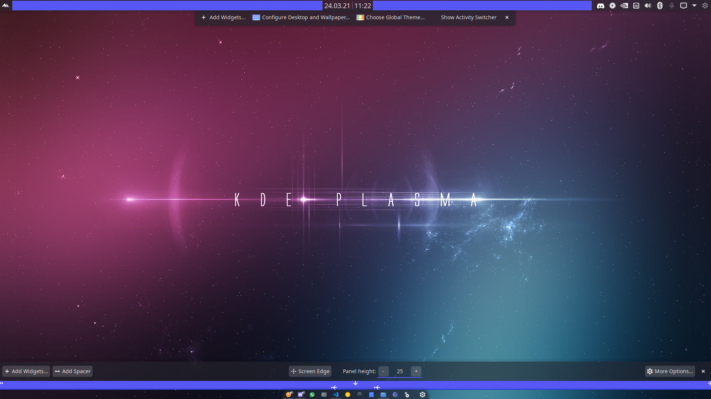
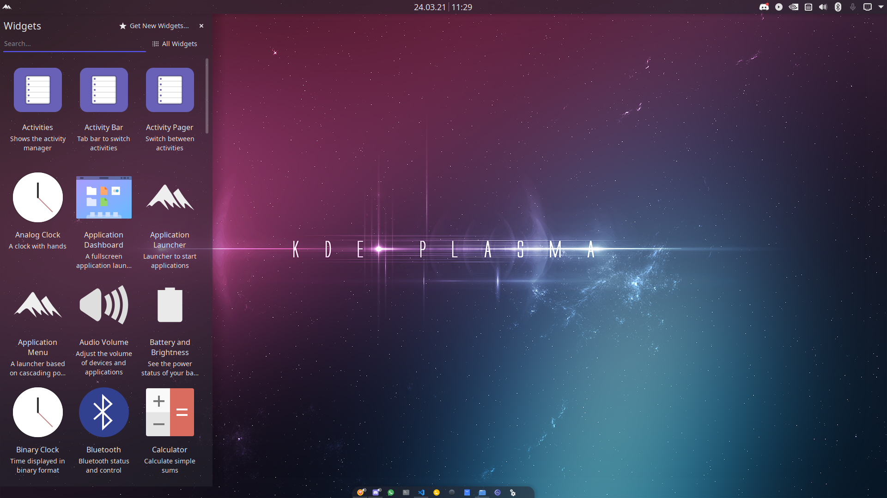
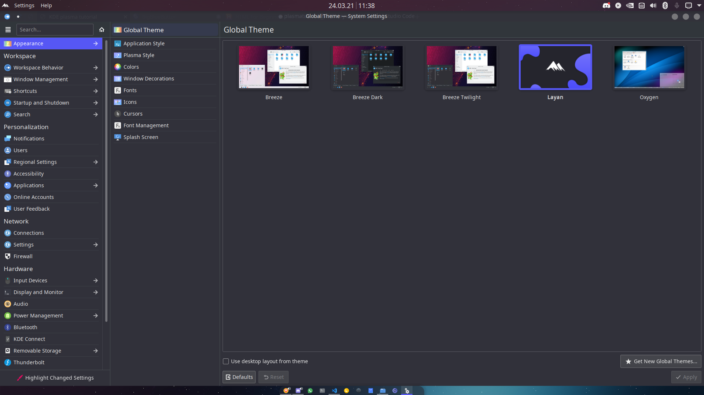

First, you will have to install plasma if you dont have it already. To do this here is a list on how to do it on most Linux distros.
if you use any of the other distros, you probably are advanced enough to know how to install it either way lol.
after installing plasma, we can now get to the overall taskbar look. Lets begin with the dock. To get it, right click on it and choose edit panel. At first, remove everything except for the task-manager. Also, under more options, set it to center. Then, pull the 2 arrows heading left to the middle.
After that, you can edit the height according to your preference. Personally, I have it at 25.
To get the taskbar on top, rightclick on your desktop and choose add panel. After that, choose application menu bar.
And now you have the overall look! Now, lets go over to widgets. Now, lets get to the widgets. To open a window as shown above, rightclick on the taskbar you want to add widgets to and click on add widgets.
I personally always add an application menu, a global menu, a digital clock and a system tray.
After you added those widgets, click on edit panel and configure them as you like. I, obviousely, configure it as shown before. You can add spacers to center things.
Now you have the most basic resemblance of MacOS. Lets get to theming now. This is KDE 5.21. It has a global appearance setting. Here, you can just click on get new global themes and download the one you like.
Of course, you can also choose a different theme for each subsetting, like colors or icons.